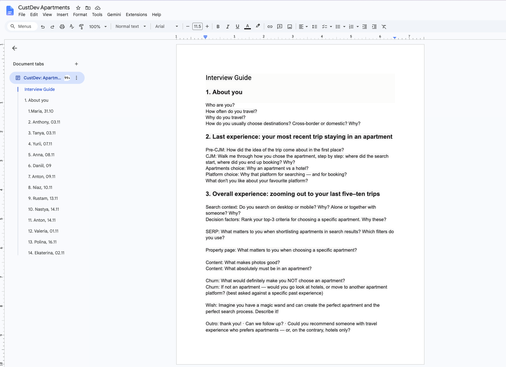
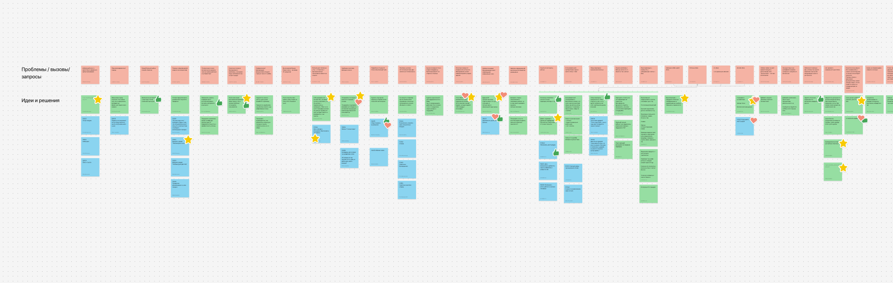
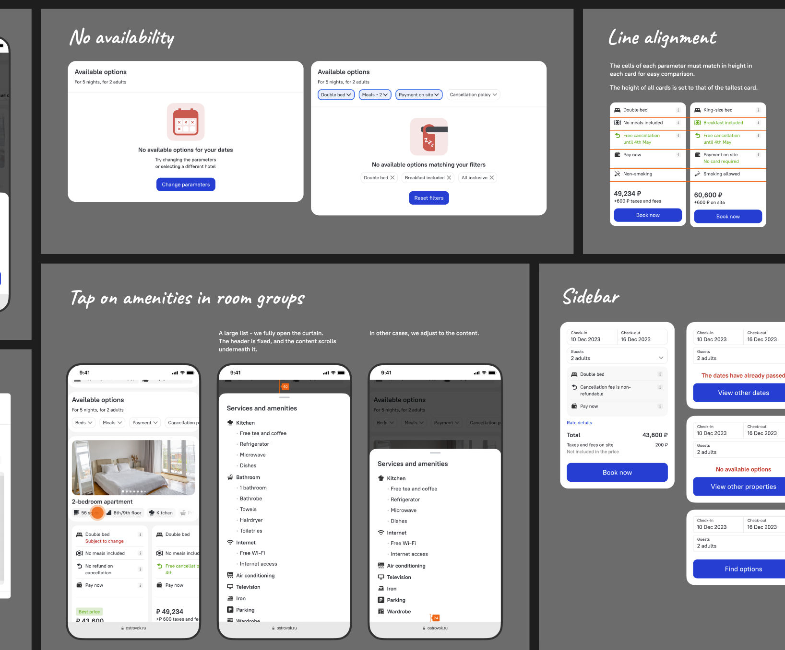
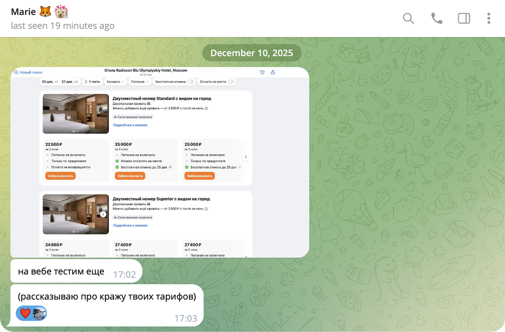
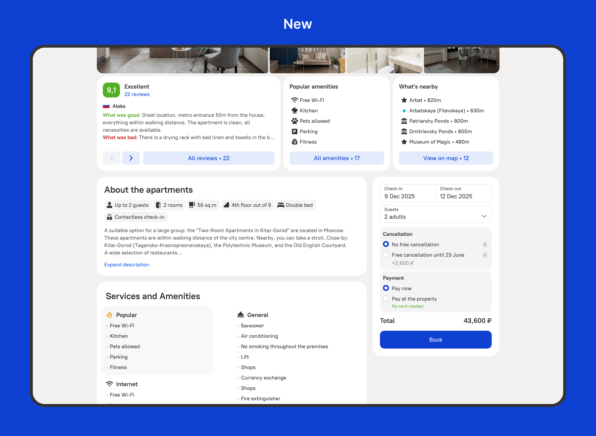

Hotel & apartments page redesign

Context
Ostrovok is a brand of Emerging Travel Group. After Booking.com left Russia in 2022, user traffic surged: the company assembled a product team of big-tech alumni, and I joined to lead design. The hotel page — the busiest point of the funnel — had grown outdated, and there had never been enough engineering resource to rethink it end-to-end.
By the end of the year the page team had capacity freed up for the coming quarters: either we enter that window with a ready redesign, or the page stays as is indefinitely. The main trigger was apartments — a growing segment the page was never designed for; still, every block was designed to be reusable — one system for both hotels and apartments. There were no user complaints — there was an opportunity to move conversion, and we had to find the growth points ourselves.
The challenge: three constraints at once
- Hit the deadline: design finished and approved before the holidays — otherwise the window closes.
- Don’t hurt conversion: the highest-revenue point of the funnel — hence shipping in parts with a separate A/B test for every block.
- Improve the UX — and lift the metrics: conversion to the next funnel steps and, ultimately, to bookings.
Research foundation
One body of data for the whole project. I wrote the guide, and we ran 14 customer development interviews: people who travel regularly, but neither Ostrovok users nor employees. The guide moved from a step-by-step walkthrough of their last real trip (CJM) to general patterns: selection criteria, behaviour on search results and the property page, expectations for photos, reasons to drop off.
Synthesis on the board turned into a backlog of changes, and funnel analytics set the priorities: the biggest losses were at the rate selection step. Order of work: rates first; header, gallery and the remaining blocks next.


Delivery strategy
Every major block became a separate engineering task and a separate A/B test: the page was updated without a big-bang release, and every test left knowledge behind. Metrics on two levels: blocks — by conversion to the booking form; the project as a whole — by conversion to bookings. Test results are under each block below.
Deep dive: room & rate selection
The decision point. The paths diverged: hotels have many rates — people compare them; apartments have a single rate — the only differences are cancellation and payment. Two solutions, two tests.
Hotels: comparing instead of reading
The interviews showed rate selection was the most confusing step. Rates were laid out as rows, conditions as text in composite cells: to spot the differences you had to read every row in full; some people discovered only after booking that the “included breakfast” wasn’t there.
Choosing a rate is a search for differences. In the old block you had to read them out: what was identical and what was different looked the same.
The solution — rates as vertical cards side by side:
- every condition gets its own slot, aligned across the cards: one glance compares one parameter across all rates;
- meaningful differences are highlighted — what differs is visible before reading;
- room photos and amenities sit in a column on the left, leaving only the rates on the right.

Hotels: +5% conversion to the booking form — a separate A/B test. The block became the standard for room and rate selection.

One more proof of a job well done is when it turns into an industry trend: Aviasales, one of the biggest travel-tech players, tested horizontal rate cards inspired by our design — and uses them to this day.
A former colleague, product manager — now at Aviasales: “still testing it on web” — “(filling me in on the theft of your rates)”.

Apartments: rate selection only
In an apartment there is no room to choose — the property is the room. All that remains is cancellation and payment, and the hotel-style room-and-rate block is overkill for that: in the interviews people recalled this step as a breakage — “what am I choosing here?”. Respondents got lost among the rates and couldn’t tell whether it was really the same apartment: the photos in the block seemed to match the ones above on the page — but not all of them did.
The solution: the selection block was removed entirely; rate conditions became toggles inside a single sticky booking block with the price and the button. This was possible thanks to our own extranet: apartments come directly from hosts, and we control the rate structure ourselves.

Apartments: +9% conversion to the booking form — the strongest test of the project.
Highlight: header & gallery
People choose a place to stay with their eyes, yet the gallery kept getting criticised in the interviews: the photos were too small — to make anything out, you had to open the fullscreen view right away.
- freed up space for the gallery: cleaned up the UI and moved the reviews-and-rating carousel lower — the photos got noticeably bigger;
- moved amenities inside the expanded gallery: a frequent task for respondents was hunting for an apartment’s features in the photos and checking them against the listed amenities; they used to jump between blocks for that — now the photos and the list sit side by side, and the answer is right there.


Header and gallery: +2.9% conversion to the booking form — a separate A/B test.
Results
- +5% / +9% / +2.9% in separate A/B tests — conversion to the booking form;
- in total, +7% to bookings → +$1.8M of additional revenue per year;
- the page is a single system: blocks are reused across hotels and apartments, and new property types fit in without a redo.
Takeaways
- A resource window is a legitimate reason for a project: it started with an opportunity, and analytics plus research found where to aim it.
- One research corpus for the whole project: 14 interviews were enough for both the rates and the gallery.
- Shipping in parts with separate tests turns a redesign into a series of verifiable bets.
- Sometimes the best solution is to remove a block, not to improve it: on apartments this delivered more than the redesigned comparison did on hotels.